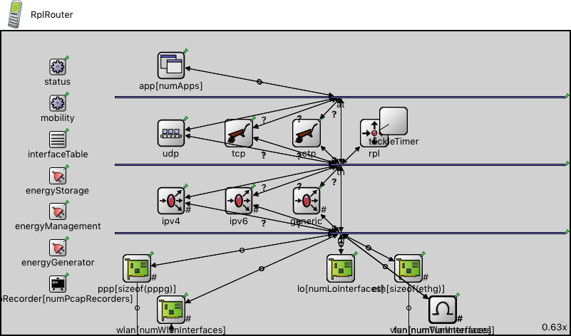

This documentation is released under the Creative Commons license
This documentation is released under the Creative Commons license(no description)
| Name | Type | Description |
|---|---|---|
| AdhocHost | compound module |
A wireless host containing routing, mobility and energy components. Supports IPv4 network protocol, TCP, UDP, and SCTP as transport protocol. This is a typical mobile node which can participate in adhoc routing and may have TCP/UDP applications installed. Supports ICMP (ping) too. |
| Name | Type | Description |
|---|---|---|
| RplNetwork | network | (no description) |
| Name | Type | Default value | Description |
|---|---|---|---|
| hasStatus | bool | false | |
| osgModel | string | "" |
3D model for OSG visualization, no 3D model by default |
| osgModelColor | string | "" |
tint color, no colorization by default |
| canvasImage | string | "" |
image for canvas visualization, no image by default |
| canvasImageColor | string | "" |
tint color, no colorization by default |
| numPcapRecorders | int | 0 | |
| numLoInterfaces | int | 1 | |
| numWlanInterfaces | int | 1 | |
| numEthInterfaces | int | 0 |
minimum number of ethernet interfaces |
| numPppInterfaces | int | 0 |
minimum number of PPP interfaces |
| numTunInterfaces | int | 0 | |
| numVlanInterfaces | int | 0 | |
| hasIpv4 | bool | true | |
| hasIpv6 | bool | false | |
| hasGn | bool | false | |
| forwarding | bool | true | |
| multicastForwarding | bool | false | |
| hasUdp | bool | firstAvailableOrEmpty("Udp") != "" | |
| hasTcp | bool | firstAvailableOrEmpty("Tcp", "TcpLwip", "TcpNsc") != "" | |
| hasSctp | bool | false | |
| numApps | int | 0 |
| Name | Value | Description |
|---|---|---|
| networkNode | ||
| labels | node | |
| display | i=device/cellphone |
| Name | Direction | Size | Description |
|---|---|---|---|
| radioIn [ ] | input | numWlanInterfaces | |
| pppg [ ] | inout | numPppInterfaces | |
| ethg [ ] | inout | numEthInterfaces |
| Name | Type | Default value | Description |
|---|---|---|---|
| status.initialStatus | string | "UP" |
TODO @signal, @statistic |
| pcapRecorder.verbose | bool | false |
whether to log packets on the module output |
| pcapRecorder.pcapFile | string | "" |
the PCAP file to be written |
| pcapRecorder.pcapLinkType | int | -1 |
the network type header field in the PCAP file, see http://www.tcpdump.org/linktypes.html (1=ethernet, 204=ppp, 105=IEEE 802.11, ...) (-1 means autodetect based on first recordable packet) |
| pcapRecorder.snaplen | int | 65535 |
maximum number of bytes to record per packet |
| pcapRecorder.dumpBadFrames | bool | true |
enable dump of frames with hasBitError |
| pcapRecorder.moduleNamePatterns | string | "wlan[*] eth[*] ppp[*]" |
space-separated list of sibling module names to listen on |
| pcapRecorder.sendingSignalNames | string | "packetSentToLower" |
space-separated list of outbound packet signals to subscribe to |
| pcapRecorder.receivingSignalNames | string | "packetReceivedFromLower" |
space-separated list of inbound packet signals to subscribe to |
| pcapRecorder.dumpProtocols | string | "ethernetmac ppp ieee80211mac" |
space-separated list of protocol names as defined in the Protocol class |
| pcapRecorder.packetFilter | string | "*" |
which packets are considered, matches all packets by default |
| pcapRecorder.packetDataFilter | string | "*" |
which packets are considered based on the data they contain, matches all packets by default |
| pcapRecorder.helpers | string | "" |
usable PcapRecorder::IHelper helpers for accept packettype and store/convert packet as specified linktype currently available: "inet::AckingMacToEthernetPcapRecorderHelper" |
| pcapRecorder.alwaysFlush | bool | false |
flush the pcapFile after each write to ensure that all packets are captured in case of a crash |
| pcapRecorder.displayStringTextFormat | string | "rec: %n pks" | |
| interfaceTable.displayAddresses | bool | false |
whether to display IP addresses on links |
This documentation is released under the Creative Commons license